Cotto Gastro Italiano is the new artsy Italian restaurant in Suadiye / Istanbul. Located in the most lively and local part of the city, Cotto is somewhere to be in a special day, or make the day special.
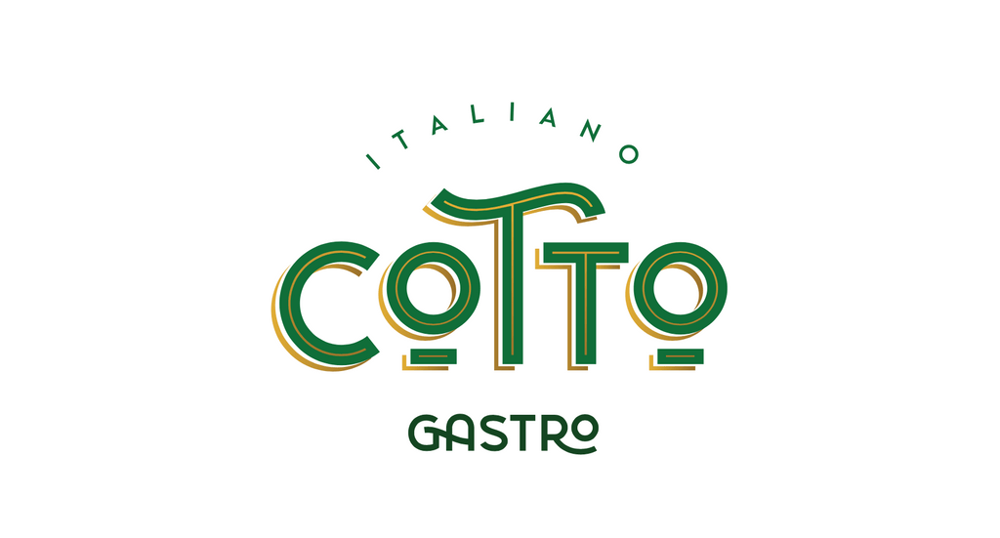
We have been asked to create a brand identity which reflects an italian style artisan cousine. Serves not as only a restaurant but also a cafe, a winery and a charcuterie.
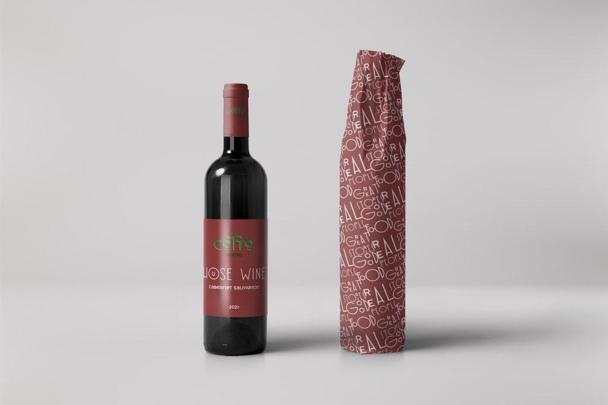
Our client had a specific audience they wanted to target, had a great network of chefs and determined the energy and sources to create a place for people to have good food, meet real people and tell great stories.
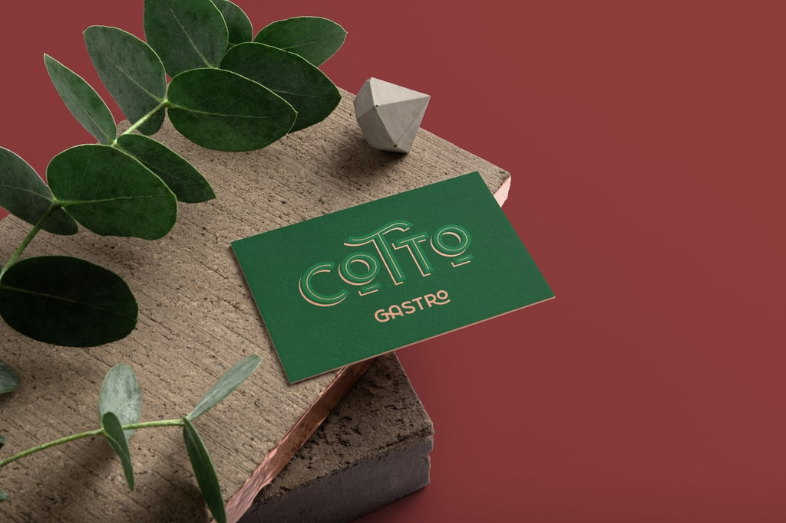
The name Cotto -means "cooked" in italian. So we combined terracotta colors with a deep green in an Art Deco style typography. Aiming to set a mood for the customers before they even get in.
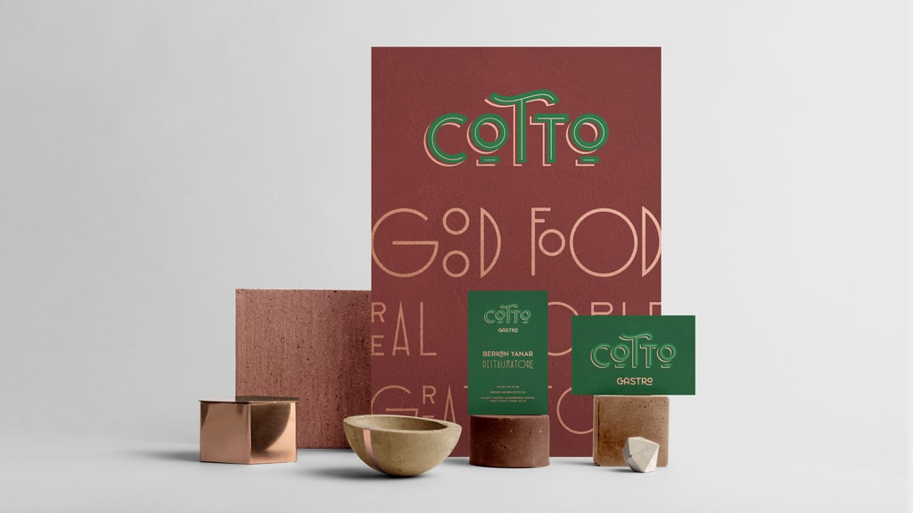
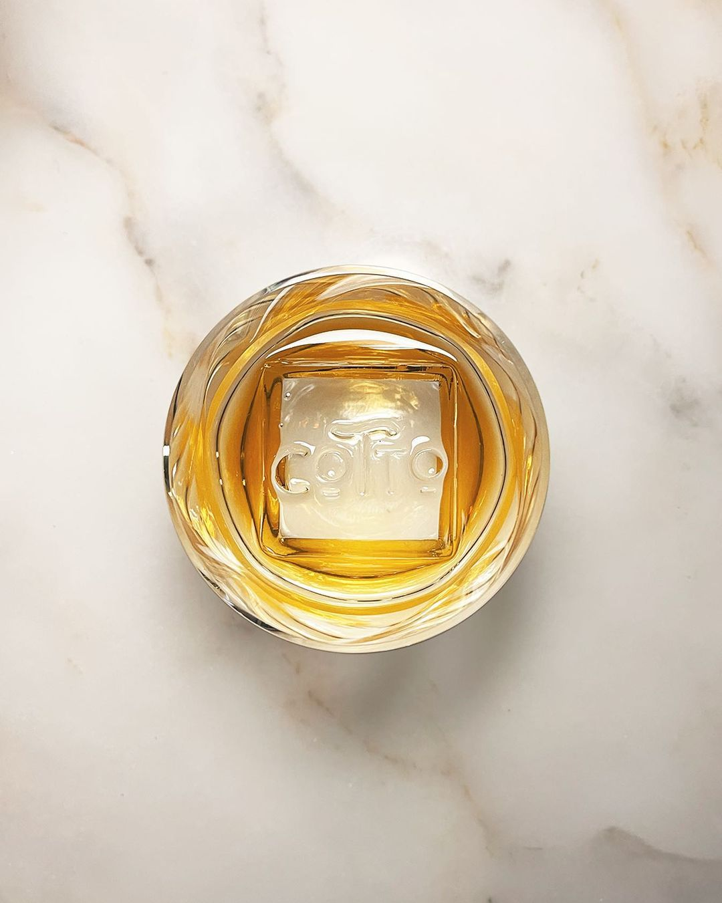
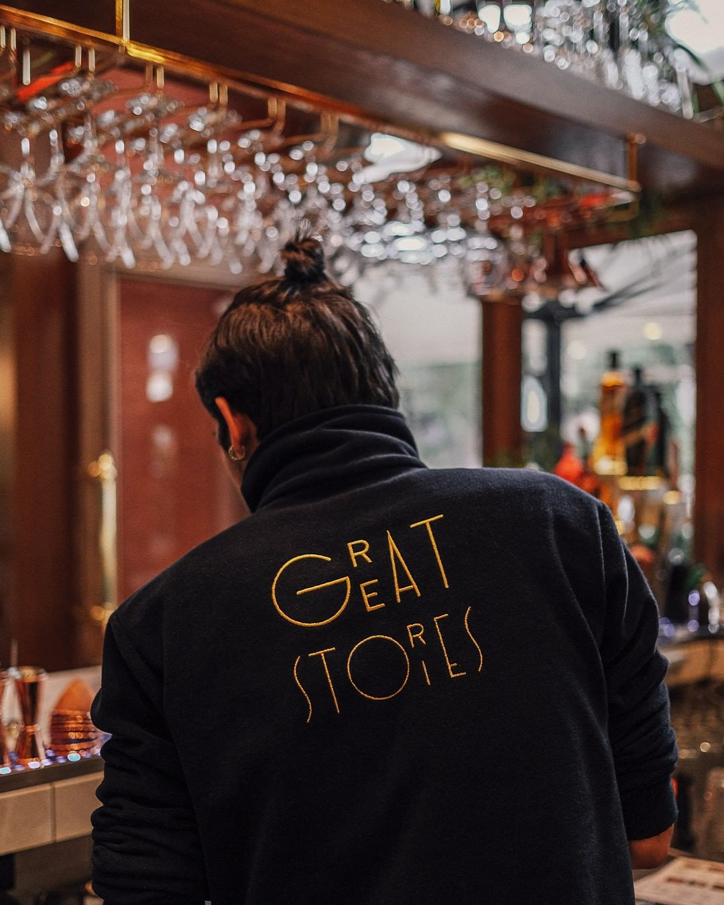
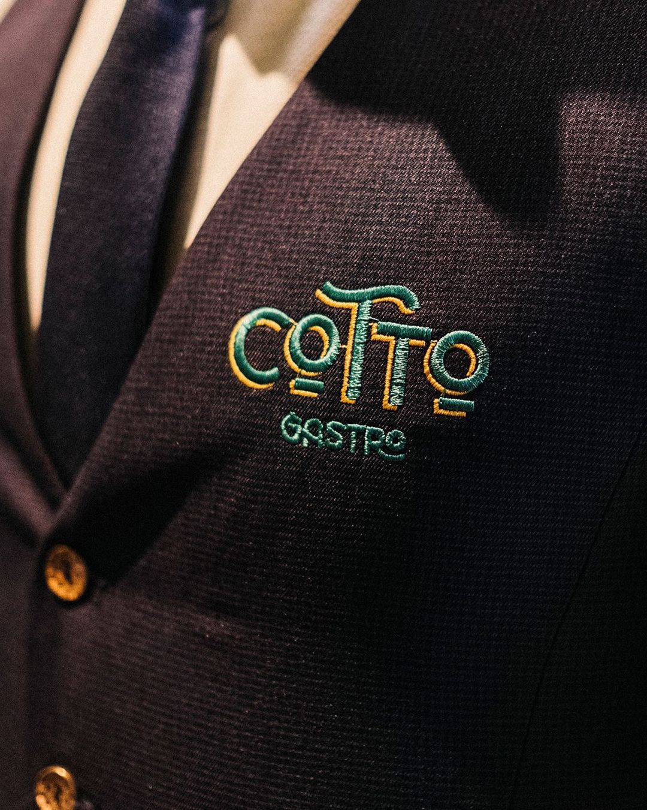
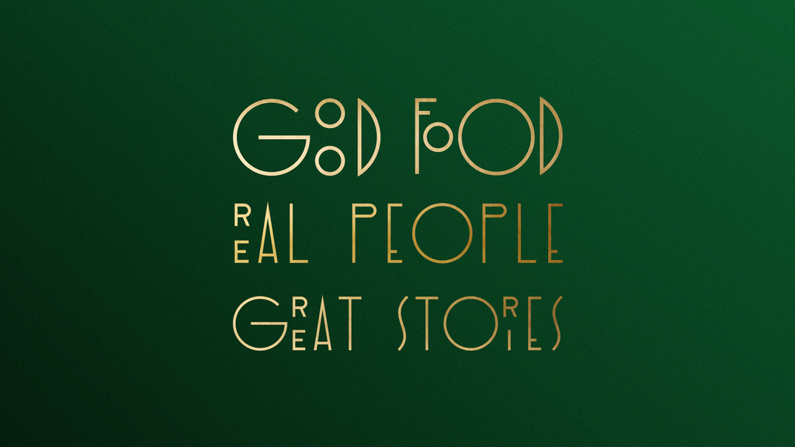
Besides the brand identity, we designed the printed material and the decorative approach.
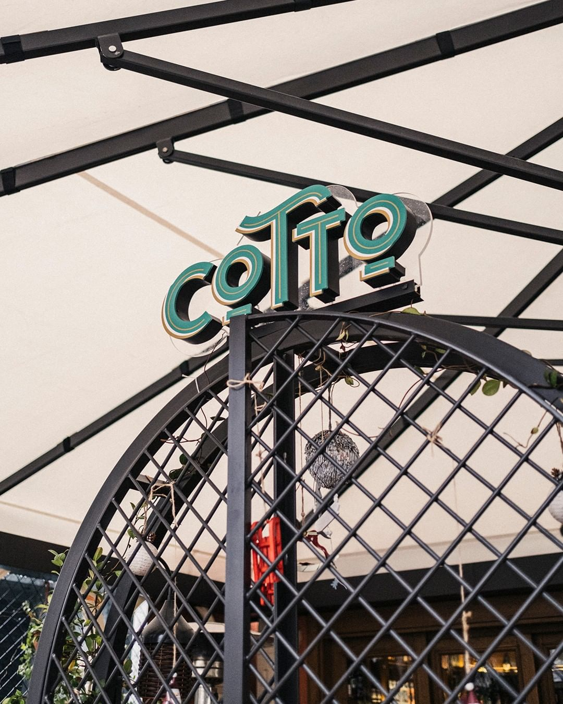
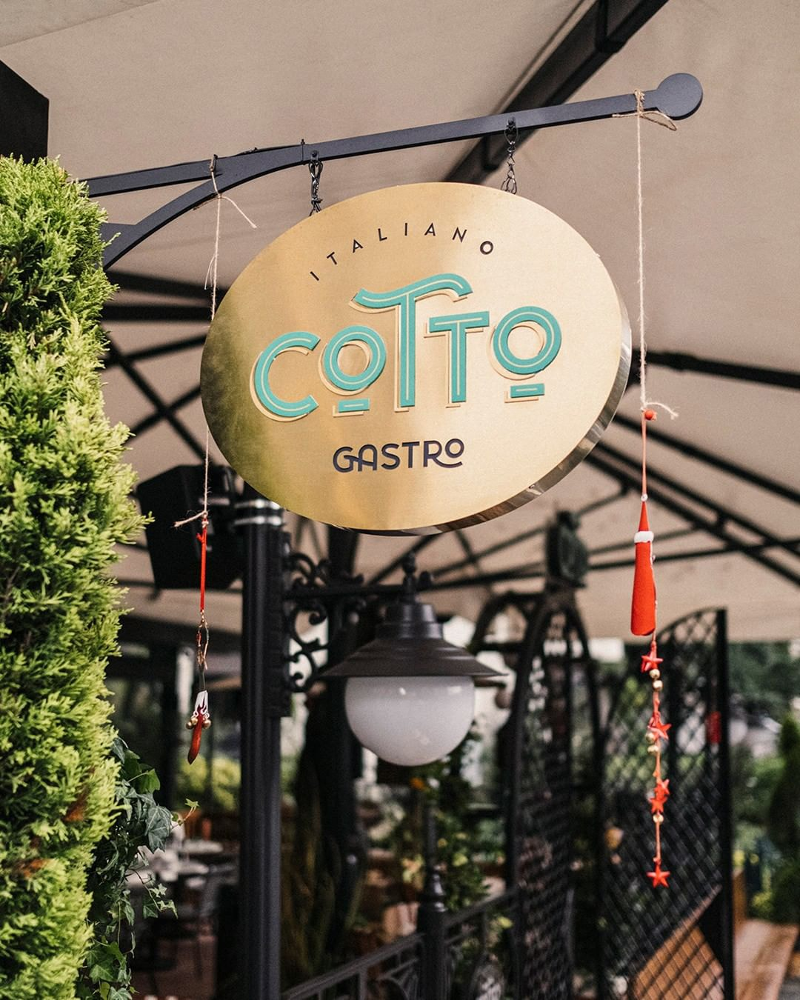
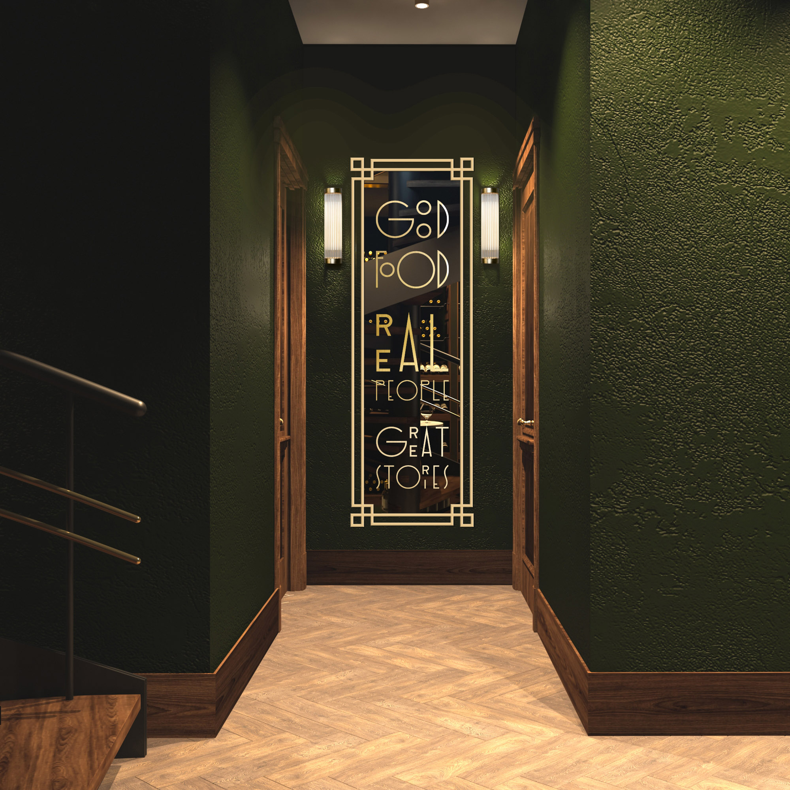